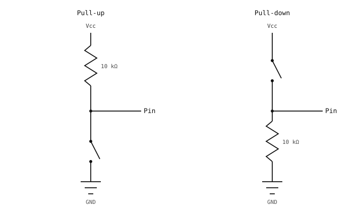

6.9. Switches and pull resistors¶
GPIO output drives external hardware. GPIO input is the
opposite: the camera reads the voltage on a pin and reports it
as 0 or 1. The simplest input device is a switch – and
making one readable reliably needs one piece of electronics in
addition to the switch itself.
6.9.1. Switches and floating inputs¶
A switch is a mechanical contact: two pieces of metal that touch when the switch is closed and separate when it is open. Electrically, that is the entire device. There is no voltage source inside; a switch alone provides only “connected” or “disconnected”.
Wiring a switch directly between a GPIO pin and ground means the pin is:
At 0 V when the switch is closed (now wired to ground).
Floating when the switch is open (wired to nothing).
A floating pin has no defined voltage. The input reads
whatever happens to be near it – crosstalk from nearby
signals, noise from the supply, even static on a finger close
to the wire. value() returns unpredictable
mixes of 0 and 1 many times per second.
6.9.2. Pull-up and pull-down resistors¶
The fix is a pull resistor: a high-value resistor (10 kΩ to 100 kΩ is typical) that ties the input to a known rail when the switch is open.

Pull-up (left) and pull-down (right) configurations for a switch input.¶
Pull-up. The resistor ties the input to the supply rail. When the switch is open, only a small current trickles through the resistor and the pin reads high. When the switch is closed, it short-circuits the pin to ground; the pin reads low. The resistor limits the current that would otherwise flow from supply to ground through the closed switch.
Pull-down. The mirror image: the resistor ties the input to ground, and the switch connects to the supply. Open reads low, closed reads high.
Pull-up is the more common convention – “active low”
buttons. The MCU itself provides built-in pull-ups and
pull-downs that can be enabled with
Pin.PULL_UP or
Pin.PULL_DOWN, removing the
external resistor entirely.